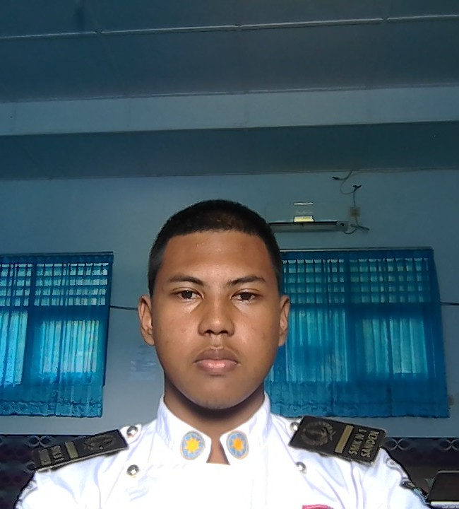

Siswa SMK jurusan Rekayasa Perangkat Lunak yang antusias belajar dan siap mengikuti PKL untuk mengaplikasikan pengetahuan di dunia kerja nyata. Memiliki dasar pemrograman yang baik dan semangat belajar tinggi.
Posisi yang diminati: Junior Web Developer / IT Support
Durasi: 3-6 bulan (sesuai kebutuhan perusahaan)
Kesiapan: Full-time, fleksibel jam kerja
GitHub: github.com/mrizky
Website Pribadi: mrizky.web.app